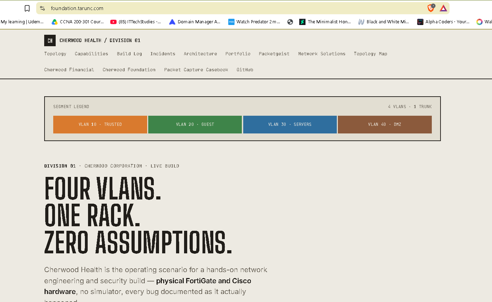
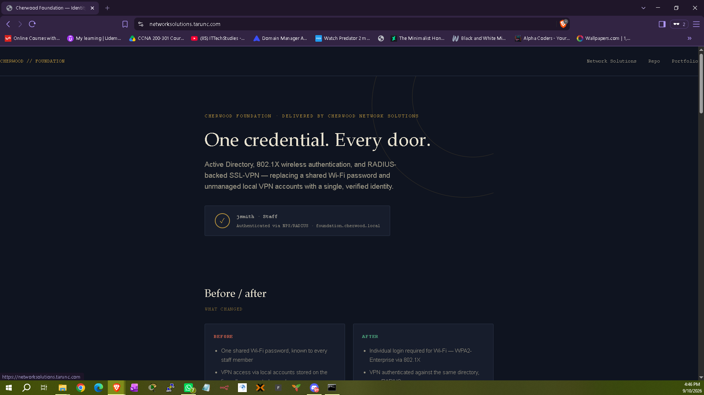
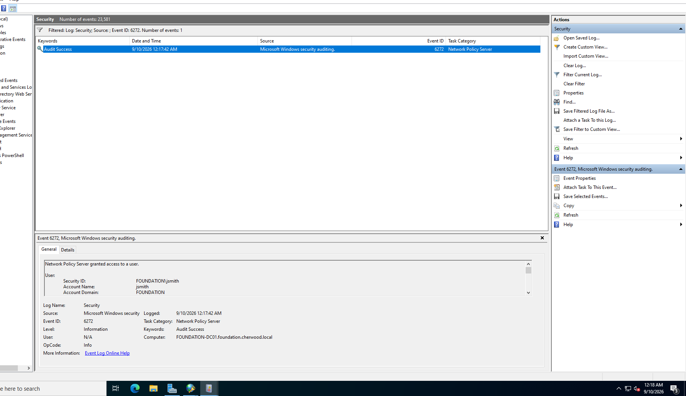
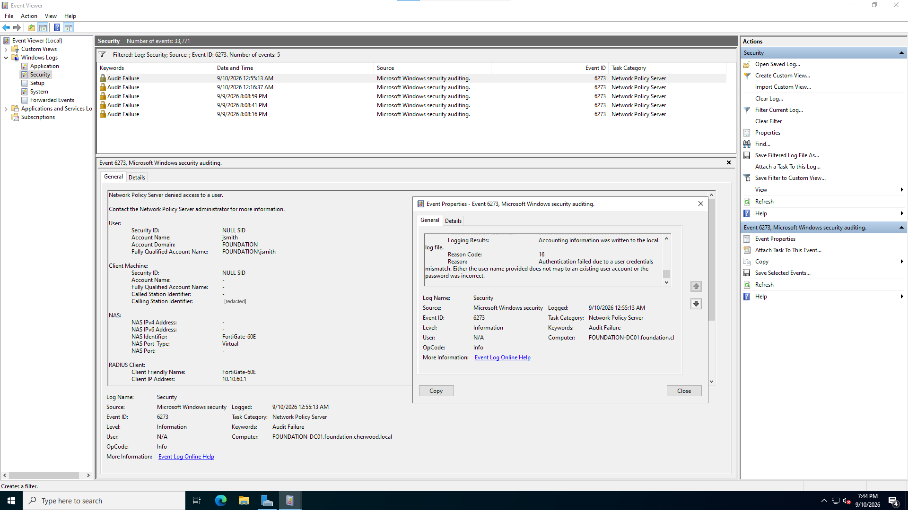
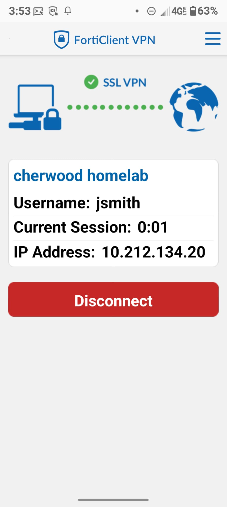
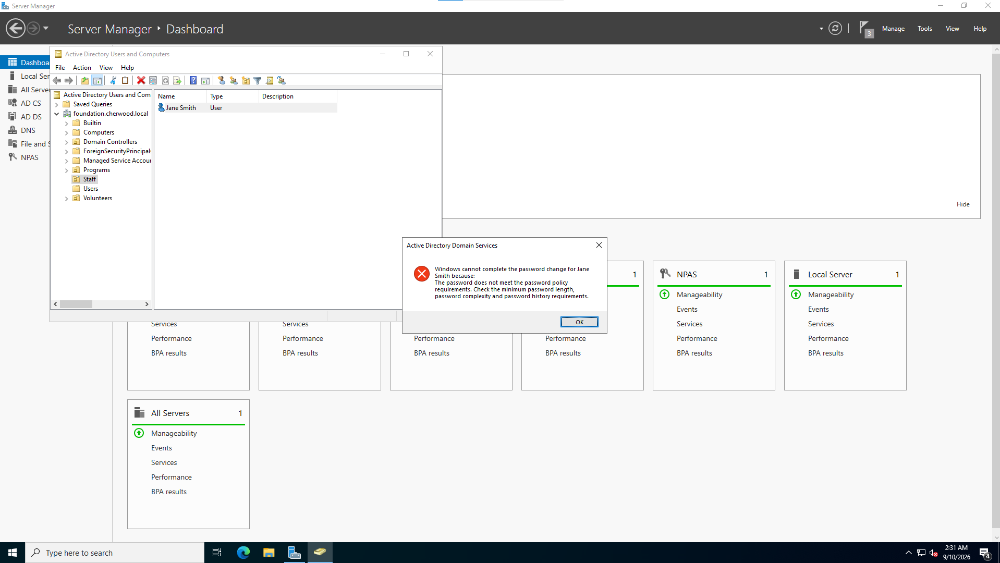
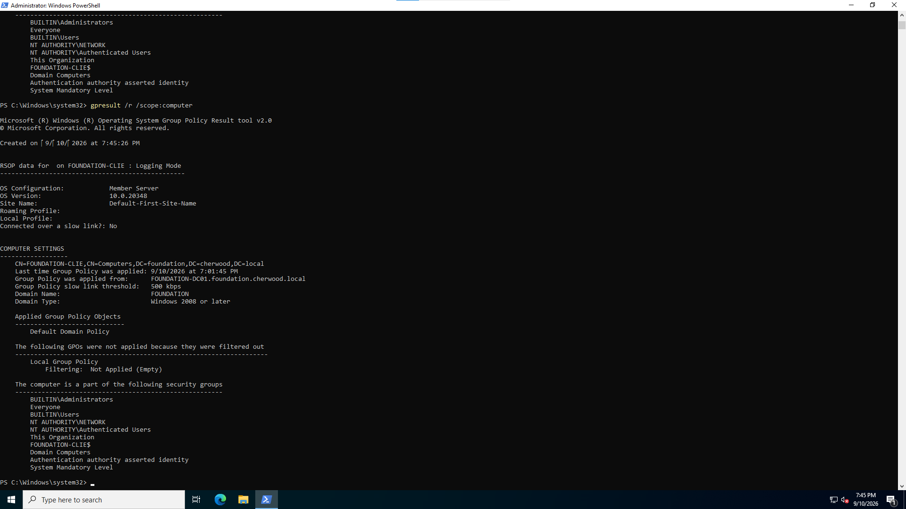
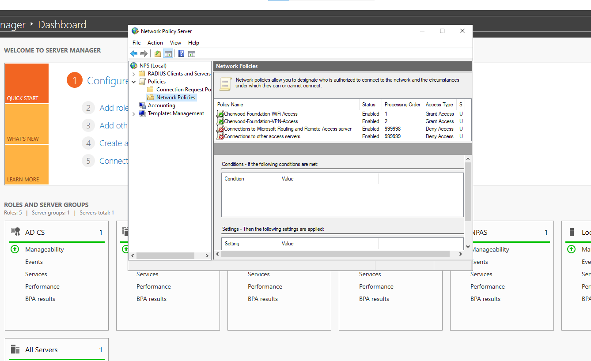
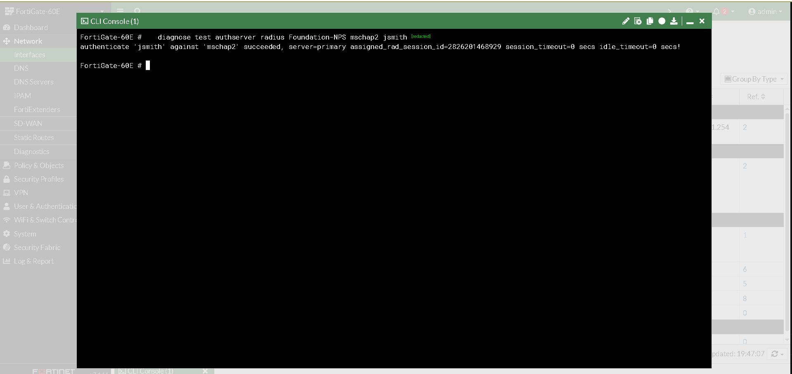
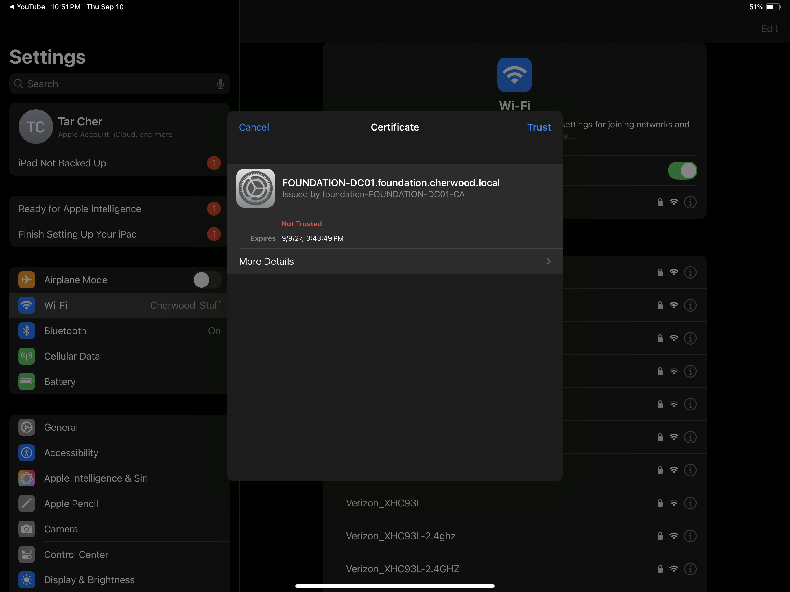

Active Directory, 802.1X wireless authentication, and RADIUS-backed SSL-VPN — replacing a shared Wi-Fi password and unmanaged local VPN accounts with a single, verified identity.
A new Active Directory domain, foundation.cherwood.local, with AD-integrated DNS and a proper OU structure — Staff, Volunteers, Programs. An Enterprise Certificate Authority issuing the certificate 802.1X requires. NPS — Microsoft's RADIUS server — standing between the directory and two entirely different client devices: a Cisco access point, and a FortiGate firewall, each with its own dedicated policy.
Both were converted from the client's old approach — a shared password on the AP, local accounts on the FortiGate — to checking against the one directory. A domain-joined client machine and a real, enforced Group Policy close out the proof: this isn't just configured, it's used.










Cause: AD DS promotion should auto-install DNS; it didn't, though the AD-integrated zone data was created correctly regardless.
Fix: manually installed the DNS Server feature; verified via live DNS record queries rather than trusting a diagnostic tool still flagging stale historical errors.
Cause: the firewall's existing rule set had no path for RDP to the domain controller, SSH to the access point, or RADIUS to the RADIUS server — each had to be added individually, narrowly scoped to one destination and one service.
Cause: Windows' own network troubleshooter, run in response to an unrelated warning, silently reverted the domain controller's static IP back to DHCP.
Fix: re-applied the static configuration; stopped using the automatic troubleshooter on server infrastructure going forward.
Cause: the Network Policy's "Wireless" condition meant NPS skipped it entirely for VPN's "Virtual" connection type — with no second policy, every VPN request fell through unmatched.
Fix: a second, independent Network Policy, scoped specifically to VPN traffic.
Cause: iOS requires an explicit certificate-trust confirmation mid-handshake when connecting to a network secured by an internal certificate authority; missing that tap stalls the connection indefinitely.
Cause: a mismatched RADIUS shared secret between the firewall and the RADIUS server — which fails completely silently by design, since the packet can't even be authenticated well enough to log.
Fix: matched the secret on both sides; confirmed with a direct RADIUS test bypassing the VPN portal layer entirely.